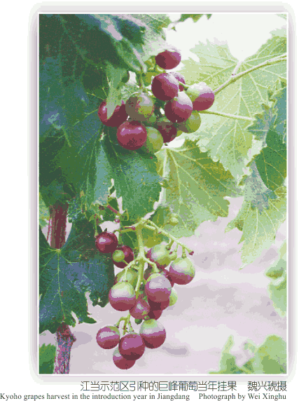

 “一江两河”中部流域优越的光照条件、灌溉条件、洁净的无污染环境为发展日光温室反季节栽培提供了独特优势。在日喀则、拉萨等城市近郊发展日光温室反季节蔬菜不仅为广大居民供应新鲜、便宜的时令蔬菜，也是沙漠化土地高效利用的新途径，为农业结构调整和发展西藏的优质农产品提供技术储备。 根据“一江两河”中部流域河谷沙区的自然条件，建设日光温室应选用Ⅱ代改良温室结构，配套保温被、自动卷帘机设备和双层膜覆盖，防止低温、大风和冰雹。以秋冬茬、早春茬和夏季蔬菜栽培为主。蔬菜品种以早、中熟品种为主。注意控制晴天高温和阴雨、雪天的温度骤变。秋冬茬栽培时注意卷帘时间，尽量保持温室夜间有足够的热量。